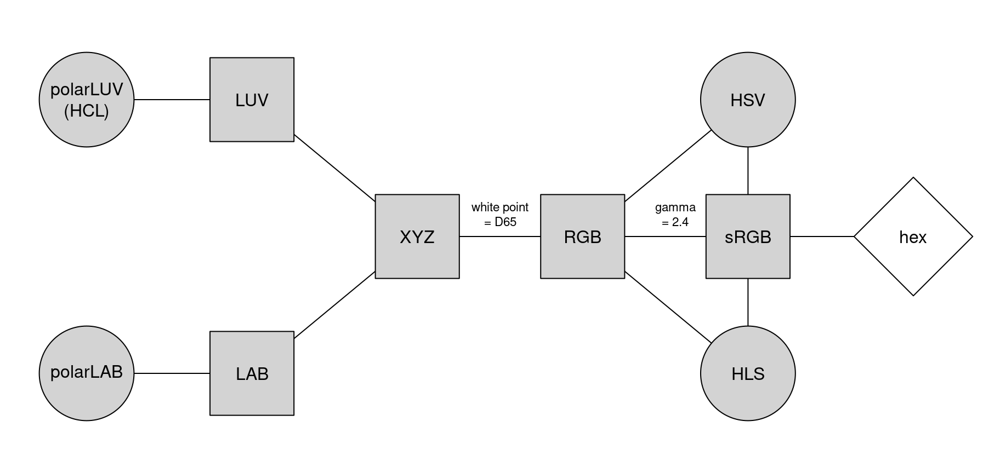

color_spaces.RmdAt the core of the colorspace package there are various utilities for computing with color spaces (as the name conveys). Thus, the package helps to map various three-dimensional representations of color to each other, see Ihaka (2003). A particularly important mapping was the one from the perceptually-based and device-independent color model HCL (Hue-Chroma-Luminance) to standard Red-Green-Blue (sRGB) which is the basis for color specifications in many systems based on the corresponding hex codes (e.g., in HTML but also in R). For completeness further standard color models were included as well in the package. The connections are illustrated in the following graph:

Color models that are (or try to be) perceptually-based are displayed with circles, other color models with rectangles. The corresponding classes and eponymous class constructors in colorspace are:
RGB() for the classic Red-Green-Blue color model that mixes three primary colors with different intensities to obtain a spectrum of colors. The advantage of this color model is (or was) that it corresponded to how computer and TV screens generated colors, hence it was widely adopted and still is the basis for color specifications in many systems. For example, the hex color codes are employed in HTML but also in R. However, the RGB model also has some important drawbacks: It does not take into account the output device properties, it is not perceptually uniform (a unit step within RGB does not produce a constant perceptual change in color), and it is unintuitive for humans to specify colors (say brown or pink) in this space. (Wikipedia 2018e)
sRGB() addresses the issue of device dependency by adopting a so-called gamma correction. Therefore, the gamma-corrected standard RGB (sRGB), as opposed to the linearized RGB above, is a good model for specifying colors in software and for hardware. But it is still unintuitive for humans to work directly with this. Therefore, sRGB is a good place to end up in a color space manipulation but it is not a good place to start. (Wikipedia 2018f)
HSV() is a simple transformation of the (s)RGB space that tries to capture the perceptual axes: hue (dominant wavelength, the type of color), saturation (colorfulness), and value (brightness, i.e., light vs. dark). Unfortunately, the three axes in the HSV model are confounded so that, e.g., brightness changes dramaticaly with hue. (Wikipedia 2018d)
HLS() (Hue-Lightness-Saturation) is another transformation of (s)RGB that tries to capture the perceptual axes. It does a somewhat better job but the dimensions are still strongly confounded. (Wikipedia 2018d)
XYZ() was established by the CIE (Commission Internationale de l’Eclairage) based on experiments with human subjects. It provides a unique triplet of XYZ values, coding the standard observer’s perception of the color. It is device-independent but it is not perceptually uniform and the XYZ coordinates have no intuitive meaning. (Wikipedia 2018a)
LUV() and LAB() were therefore proposed by the CIE as perceptually uniform color spaces where the former is typically preferred for emissive technologies (such as screens and monitors) whereas the latter is usually preferred when working with dyes and pigments. However, the three axes of these two spaces still do not correspond to human perceptual axes. (Wikipedia 2018c, 2018b)
polarLUV() and polarLAB() therefore take polar coordinates in the UV plane and AB plane, respectively. Specifically, the polar coordinates of the LUV model are known as the HCL (Hue-Chroma-Luminance) model. These capture the human perceptual axes very well without confounding effects as in the HSV or HLS approaches. (More details follow below.)All the S4 classes listed above inherit from a virtual class color which are internally always represented by matrices with three columns (corresponding to the different three dimensions).
For working with these color spaces various utilities are available:
as() method: Conversions of a color object to the various color spaces, e.g., `as(x, “sRGB”).coords(): Extract the three-dimensional coordinates pertaining to the current color class.hex(): Convert a color object to sRGB and code in a hex string that can be used within R plotting functions.hex2RGB(): Convert a given hex color string to an sRGB color object which can also be coerced to other color spaces.readRGB() and readhex() can read text files into color objects, either from RGB coordinates or hex color strings.writehex(): Writes hex color strings to a text file.whitepoint(): Query and change the white point employed in conversions from CIE XYZ to RGB. Defaults to D65.As an example a vector of colors x can be specified in the HCL (or polar LUV) model:
## L C H
## [1,] 70 50 0
## [2,] 70 50 120
## [3,] 70 50 240These are pastel red (hue = 0), green (hue = 120), and blue (hue = 240) with moderate chroma and luminance. For display in other systems an sRGB representation might be needed:
## R G B
## [1,] 0.8931564 0.5853740 0.6465459
## [2,] 0.5266113 0.7224335 0.4590469
## [3,] 0.4907804 0.6911937 0.8673877With coords(x) or coords(y) the displayed coordinates can also be extracted as numeric matrices. And from sRGB we can also coerce to HSV for example:
## H S V
## [1,] 348.0750 0.3446008 0.8931564
## [2,] 104.6087 0.3645825 0.7224335
## [3,] 208.0707 0.4341857 0.8673877For display in many systems (including R itself) hex color codes based on the sRGB coordinates can be created:
## [1] "#E495A5" "#86B875" "#7DB0DD"Ihaka, Ross. 2003. “Colour for Presentation Graphics.” In Proceedings of the 3rd International Workshop on Distributed Statistical Computing, Vienna, Austria, edited by Kurt Hornik, Friedrich Leisch, and Achim Zeileis. http://www.ci.tuwien.ac.at/Conferences/DSC-2003/Proceedings/.
Wikipedia. 2018a. “CIE 1931 Color Space — Wikipedia, the Free Encyclopedia.” URL https://en.wikipedia.org/wiki/CIE_1931_color_space, accessed 2018-10-09.
———. 2018b. “CIELAB Color Space — Wikipedia, the Free Encyclopedia.” URL https://en.wikipedia.org/wiki/CIELAB_color_space, accessed 2018-10-09.
———. 2018c. “CIELUV — Wikipedia, the Free Encyclopedia.” URL https://en.wikipedia.org/wiki/CIELUV, accessed 2018-10-09.
———. 2018d. “HSL and HSV — Wikipedia, the Free Encyclopedia.” URL https://en.wikipedia.org/wiki/HSL_and_HSV, accessed 2018-10-09.
———. 2018e. “RGB Color Model — Wikipedia, the Free Encyclopedia.” URL https://en.wikipedia.org/wiki/RGB_color_model, accessed 2018-10-09.
———. 2018f. “sRGB — Wikipedia, the Free Encyclopedia.” URL https://en.wikipedia.org/wiki/sRGB, accessed 2018-10-09.